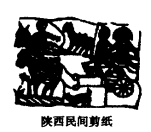

高一历史暑假作业（第一阶段）
（一）中国古代农业
【必做题】
1.《吕氏春秋》：“凡农之道，厚（候）之为宝。”《农书·粪田之宜》：“用粪犹用药也。"((吕氏春秋》：“时至而作，渴时而止。”齐民要术》：“麦黄种麻，麻黄种麦。”以上四则材料均反映了
A．中国古代农业根据节气来安排农业生产
B．中国古代农业精耕细作的特点
C．中国古代农业发展尊重自然规律
D．中国古代农业注重因地制宜
2.剪纸是我国的民间艺术，观察下列剪纸，它们形象地反映了

A．男耕女织的自然经济 B.高度发达的商品经济
C．手工业纺织技术 D．古代社会的和谐融洽
3．古代中国人对牛有着特殊情感：吃猪肉但很少吃牛肉，杨柳青年画等民间风情画多以牛为题材，民间有“牛郎织女”“太上老君骑牛人函谷关”等传说……造成这一现象的关键原因是
A．君主专制中央集权 B．佛教的广泛传播
C．封建统治者实施愚民政策 D．小农经济占主导地位
4．宋人朱或的《萍洲可谈》记载，张乖崖任崇阳县令时，“尝逢村氓市菜一束出郭门。问之，则近郊农家。乖崖答之四十，曰：‘尔有地而市菜，惰农也。’崇阳民闻之相尚力田。”材料从本质上反映了
A．维护自给自足的小农经济 B．避免农业劳动力的流失
C．禁止农民从事商业活动 D．引导农民提高耕作技术
5．谚语是民众智慧和经验的总结。下列谚语能够反映我国小农经济自给自足特点的是
A．庄稼一枝花，全靠肥当家 B．黄牛过河各顾各
C．苗儿出得齐，丰收不用提 D．小满芝麻芒种谷
6．就说明“至迟到春秋末期，我国已经开始用牛耕地”而言。下列论据中说服力最小的是
A．考古发现的春秋时期反映牛耕的文物
B．春秋时期的典籍中出现的“牛”与“耕”结合在一起的人的名字
C．战国初期的典籍中关于春秋时期“宗庙之牺（祭祀用的牛）为吠亩之勤”的记载
D．成书于战国时期的《山海经》中关于“叔均（传说中人物）是始作牛耕”的记载
7．康熙年间大力推行鼓励垦荒的措施，至乾隆时已经是“人民户口百倍于前。地无不耕之土，水无不网之波，山无不采之木石，而终不足以供人之用。”以下各项对材料理解不正确的是
A．垦荒对生态环境造成了破坏 B．垦荒活动得到政府许可鼓励
C．清朝人口增长导致人地矛盾 D．农具的革新推动了荒地开垦
8．苏轼曾说：“民庶之家，置庄田，招佃客，本望租课，非行仁义，然犹至水旱之岁，必须放免欠负、贷借种粮者，其心诚恐客散而田荒，后日之失必倍于今故也。”这句话反映出的主要问题是
A．宋代地主主要依靠土地剥削来积累财富
B．宋代地主有开展民间贩济的社会责任感
C．宋代佃户租地有较大的选择权和自由度
D．宋代农村开始出现以租佃关系经营土地
【选做题】
10．(2015·新课标全国工卷文综" 24)((吕氏春秋·上农》在描述农耕之利时不无夸张地说：一个农夫耕种肥沃的土地可以养活九口人，耕种一般的土地也能养活五口人。战国时期农业收益的增加
A．促进了个体小农经济的形成 B．抑制了手工业和商业的发展
C．导致畜力与铁制农具的使用 D．阻碍了大土地所有制的成长
11．(2015·江苏单科·4)唐人写淮北多有“稻垄泻泉声”之类的诗句，北宋仍有“水阔人间熟稻天”的描写。但1678年，河道总督的奏疏已是“田地皆成沙土，止产粟米”，两年后就有人感叹是“沟恤之制，水陆失宜”。淮北农耕变化表明古代农业
A．注重作物品种选择 B．需要政府合理作为
C．重视农田生态保护 D．全凭兴修水利工程
高一历史暑假作业（第一阶段）参考答案
（一）中国古代农业
1. B 2. A 3. D 4. A 5. B 6. D 7. B 8. C 10. A 11. B